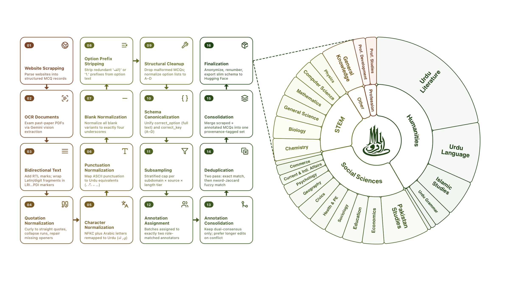
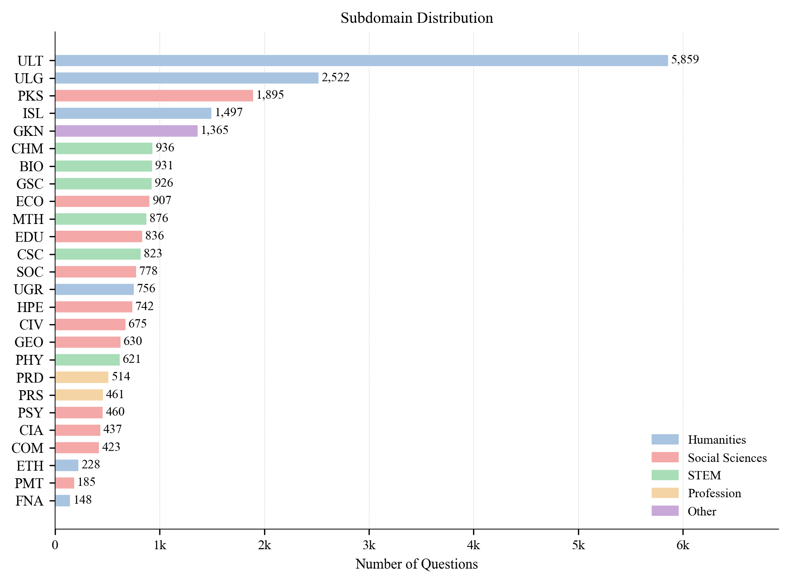
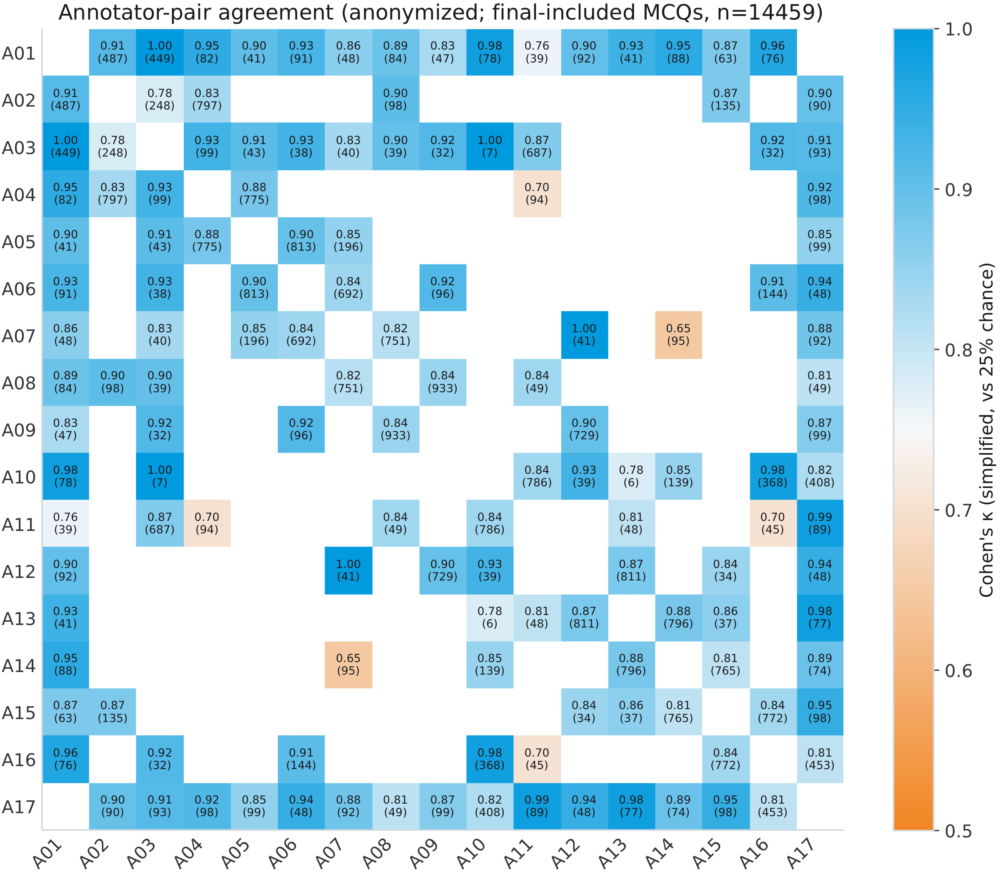
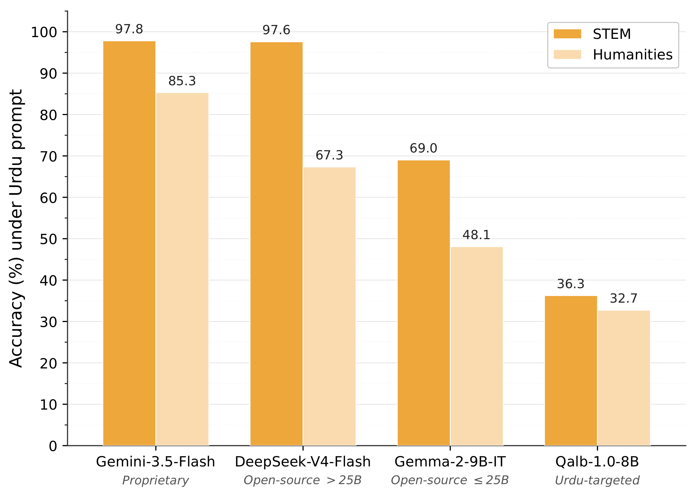
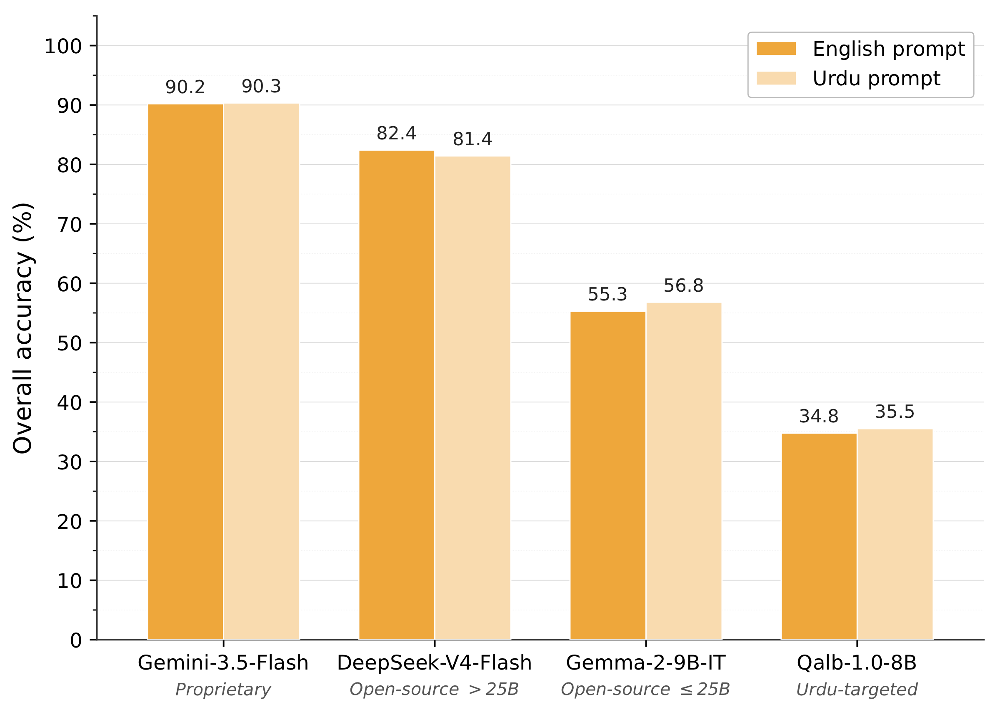
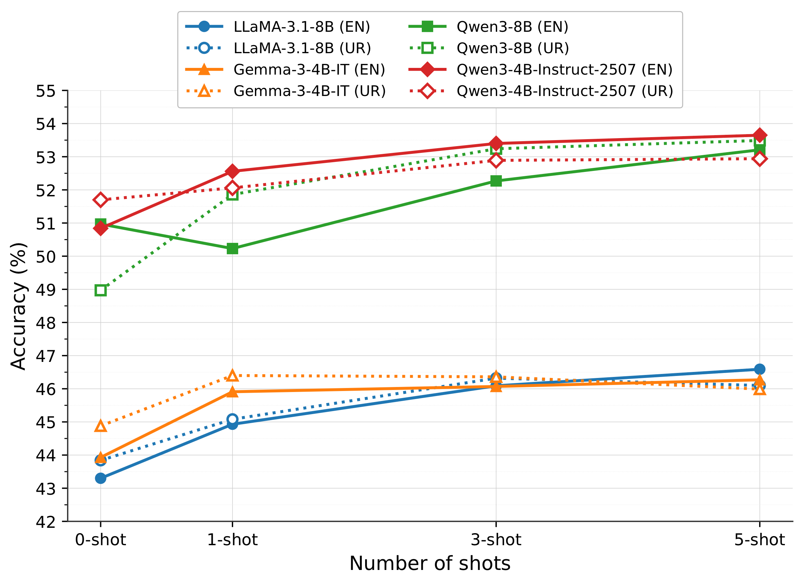
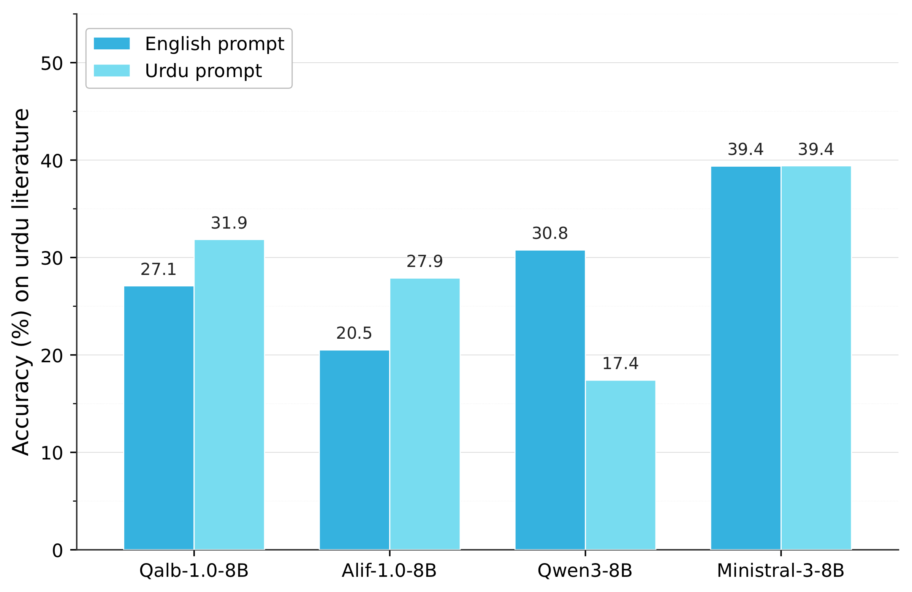

26,431 MCQs · 26 Subjects · 5 Domains · 30 LLMs Evaluated
Ahmer Tabassum*1, Sarfraz Ahmad*1, Hasan Iqbal*1, Owais Aijaz1, Momina Ahsan1, Preslav Nakov1
1MBZUAI · *Equal contribution
{ahmer.tabassum, sarfraz.ahmad, hasan.iqbal}@mbzuai.ac.ae
Meaningful multilingual evaluation must test models in the target language and educational context. Urdu, spoken by more than 230 million people, lacks a broad MMLU-style benchmark built from native educational sources. We introduce UrduMMLU, a benchmark of 26,431 Urdu MCQs across 26 subjects and five domains, collected from native Urdu MCQ banks and public examination PDFs. Unlike translation-based resources, UrduMMLU covers both standard academic subjects and Urdu- and region-specific content. We label the exam-derived portion through dual human annotation with strict consensus filtering. We evaluate 30 LLMs under English and Urdu prompts, yielding 60 zero-shot evaluations, and further evaluate four open-source LLMs under multiple few-shot settings. Gemini-3.5-Flash performs best at 90.20% and 90.34% accuracy, while no other model exceeds 85%. Many models lose 25–40 points on Urdu-centered Humanities subjects compared with STEM, and few-shot prompting yields only modest gains. UrduMMLU shows that Urdu knowledge remains uneven in current LLMs, especially for regionally grounded content.
UrduMMLU is built through a 16-stage pipeline that covers raw extraction from exam PDFs (via Claude Opus vision-based OCR) and web scraping, through normalization, deduplication, human annotation, and final release packaging. The circular chart shows the resulting subject coverage across five domains — Humanities and Social Sciences together account for nearly 72% of the benchmark, reflecting the richness of Urdu-medium curricula in literature, language, Islamic studies, and social subjects.

Figure 1. The 16-stage UrduMMLU construction pipeline (left) and the resulting 26,431-MCQ benchmark broken down by 5 domains and 26 subdomains (right). Wedge size is proportional to MCQ count.
The chart below shows MCQ counts across all 26 subdomains, color-coded by domain. Urdu Literature is by far the largest subdomain (5,859 MCQs), followed by Urdu Language (2,522) and Pakistan Studies (1,895). Within STEM, Biology, Chemistry, and General Science each contribute around 930 questions. The Profession domain — covering Professional Development and Professional Studies — is the smallest, deliberately up-sampled to 975 items during balancing to ensure reliable domain-level evaluation.

Figure 2. Final UrduMMLU item counts by subdomain, grouped by domain (color-coded). Urdu Literature and Urdu Language contribute the largest shares; Social Sciences and STEM spread across a larger number of medium-sized subdomains.
9 Pakistani exam & MCQ-bank sources · Ustad 360, MCQTimes, TestPointPK, ETest, FBISE and more
· 17,565 exam MCQs entered annotation; 14,459 passed strict dual-consensus filtering
· 94.1% native Urdu speakers; 88.3% hold a bachelor's or master's degree
· Dual annotator per item · no unsure/flag accepted
Every exam-derived item was independently annotated by two subject-matched annotators. We applied a strict consensus rule: an item was retained only when both annotators selected the same valid answer without any flags or unsure markers. The heatmap below reports pairwise simplified Cohen's κ across all 17 annotators on the 14,459 final-included MCQs. Nearly every populated cell exceeds κ = 0.85 — the agreement is consistently strong across annotator pairs rather than concentrated in a small subset.

Figure 3. Pairwise annotator agreement on final-included MCQs (n = 14,459). Each cell reports simplified Cohen's κ; the number of shared items is shown in parentheses. Blank cells indicate no shared items between that pair. Most cells exceed κ = 0.85.
🏆
Achieves 90.20% (EN) and 90.34% (UR) — the only model above 85%. The strongest open-source model, DeepSeek-V4-Flash, trails by 7.79 and 8.92 points. Performance drops sharply outside the top tier.
📉
STEM knowledge transfers well across languages; Urdu literature, grammar, and Islamic studies do not. DeepSeek-V4-Flash drops 30 points, GPT-5.4 drops 22, and several Qwen models drop over 35 points between domains.
🌐
Swapping English for Urdu instructions changes accuracy by less than 1 point for most models. The benchmark difficulty is driven by question content — Urdu educational and cultural knowledge — not the instruction wrapper.
📊
23 of 24 few-shot configurations improve over zero-shot; mean gains reach +2.67 pts at 5-shot. But no model crosses tier boundaries — demonstrations improve format consistency, not the underlying Urdu knowledge gap.
The two charts below contrast how models perform across domains and prompt languages for four representative models — one from each tier. The left chart isolates the content difficulty gap: STEM accuracy remains high even for mid-tier models, while Humanities accuracy falls sharply for every group. The right chart shows that swapping the instruction language from English to Urdu barely changes overall scores, confirming that the challenge in UrduMMLU is cultural and educational knowledge, not script or language processing.

Figure 4. STEM and Humanities accuracy on UrduMMLU under the Urdu prompt for top representative models from each group. All models score substantially lower on Humanities.

Figure 5. Overall accuracy on UrduMMLU under English and Urdu prompts for the same representative models. Prompt language has only a small effect on overall performance.
We evaluate four open-source LLMs — LLaMA-3.1-8B, Gemma-3-4B-IT, Qwen3-8B, and Qwen3-4B-Instruct-2507 — in 1-, 3-, and 5-shot settings under both English and Urdu prompts, using 200 held-out validated MCQs as demonstrations.
The curves show consistent but modest improvement. The Qwen models (red/green) start higher and gain the most from shots, with Qwen3-8B under the Urdu prompt reaching its best gain of +4.52 points at 5-shot. LLaMA and Gemma (blue/orange) cluster together with gains of roughly 2–3 points. Solid lines show English prompts; dotted lines show Urdu prompts — the two tracks run nearly parallel for every model, reinforcing that prompt language is secondary to model knowledge.
Despite these gains, no model crosses tier boundaries even at 5-shot. All four remain far below the ≥25B open-source models and proprietary systems. Demonstrations improve format consistency and calibration, but cannot substitute for missing Urdu educational knowledge.

Figure 6. Few-shot accuracy on UrduMMLU for four open-source models under English (solid) and Urdu (dotted) prompts at 0-, 1-, 3-, and 5-shot settings. Gains are modest and model rankings are unchanged across shot counts.

Figure 7. Urdu literature accuracy for four 8B-class instruction-tuned models under English and Urdu prompts. Ministral-3-8B performs best at 39.4% under both prompt settings.
Urdu literature is the largest subdomain in UrduMMLU (5,859 items) and the hardest across the entire model suite. Even Gemini-3.5-Flash — the top model overall — reaches only 80.35% here, compared with 97.75% on STEM. Content includes classical poetry, Urdu prosody, literary history, author attribution, and genre analysis, with limited overlap with English-dominated pretraining corpora.
The chart compares two Urdu-targeted models (Qalb-1.0-8B, Alif-1.0-8B) against two general-purpose 8B baselines (Qwen3-8B, Ministral-3-8B). The Urdu-targeted models do not outperform the general baselines: Ministral-3-8B achieves 39.4% under both prompts, while Qalb and Alif remain below 32%.
Notably, Qwen3-8B shows the largest prompt-language drop — from 30.8% (English) to just 17.4% (Urdu) — while both Urdu-targeted models improve under the Urdu prompt. This suggests that Urdu-specific tuning improves instruction-following more than literary knowledge, and highlights the need for deeper pretraining on native Urdu literary and educational material.
If you find UrduMMLU useful in your research, please cite:
@article{tabassum2026urdummlu,
title = {{UrduMMLU}: A Massive Multitask Benchmark for {Urdu} Language Understanding},
author = {Tabassum, Ahmer and Ahmad, Sarfraz and Iqbal, Hasan and
Aijaz, Owais and Ahsan, Momina and Nakov, Preslav},
journal = {arXiv preprint},
year = {2026},
url = {https://anonymous.for.review}
}